A gente segue as cadeias do seu corpo até encontrar o que está compensando. A avaliação já é a primeira consulta: 1h20 com um fisioterapeuta especialista, e você sai tratado no mesmo dia.
Se marcou um ou mais, vale investigar a causa real da dor antes de tratar só o sintoma.
Quanto antes a causa é encontrada, menos tempo o corpo passa compensando o movimento errado.
É uma avaliação funcional completa de 1h20, sem pressa, com um fisioterapeuta especialista. A gente investiga histórico, postura, movimento e função para encontrar a causa da sua dor, e não só o lugar onde ela aparece.
Você não sai daqui com um encaminhamento para marcar outra coisa: você já sai tratado, no mesmo dia.
Com o recovery do fim: botas de compressão e poltrona de massagem.
Sem encaminhamento médico. Hora marcada. A avaliação é sua, não é etapa de venda.
Se a dor volta, ela não foi resolvida. Foi silenciada. A diferença está em tratar a causa, e não só o lugar onde dói: a avaliação segue as cadeias do corpo até a compensação que gerou a dor, e o movimento é o tratamento. Massagem e recovery entram como apoio, nunca no lugar dele.
Tudo conduzido com técnica, transparência e acompanhamento de perto.
Agendar minha avaliação+430 avaliações reais e mais de 3.000 pacientes atendidos
A Fullmotion vai MUITO além do que propõe, aqui você se sente bem cuidado de verdade! Eles são sensacionais.
Atendimento ótimo! Me senti bastante acolhida! Excelentes profissionais! Recomendo demais!
Gostaria de agradecer a equipe pelo excelente atendimento. Profissionais atenciosos e um cuidado que faz toda a diferença.
Espaço perfeito, atendimento de excelência! Fiquei encantada com a estrutura e o cuidado da equipe.
Um começo de um novo ciclo. Atendimento personalizado e clínica super bem equipada.
Melhor experiência que eu tive. Com certeza vou voltar mais vezes. Obrigada, profissionais da Fullmotion, pelo atendimento e cuidado comigo.
Pacientes da Fullmotion gravados durante o tratamento, com autorização de imagem. Cada caso é único: o plano de cada pessoa sai da avaliação.
A primeira consulta já começa o tratamento. O plano é o que leva esse começo até o ponto em que o seu corpo sustenta o movimento sem depender da gente.
Os primeiros atendimentos tratam o que está doendo e soltam as cadeias que estão compensando. Recurso manual e recovery entram como apoio.
Cerca de 80% do tratamento é movimento: força, controle e estabilidade na cadeia que falhou. Os exercícios vão com você no app.
Os testes da avaliação são repetidos ao longo do plano, para você ver no número o que mudou, e não depender só de como está se sentindo.
A alta vem quando o corpo sustenta o movimento sozinho. Quem quiser manter o corpo em dia continua com a gente, em frequência reduzida.
A frequência sai da avaliação: 1 ou 2 vezes por semana, conforme o seu caso e a fase do tratamento. Nos outros dias, os exercícios seguem com você no app.
O ideal é sair da primeira consulta com a próxima já marcada. O que decide o resultado é a continuidade.
Agendar minha avaliaçãoR. das Rosas, 95, Sala 413
Vila Valqueire, Rio de Janeiro, RJ, 21330-680
Av. Salvador Allende, 6700, lojas 194 e 195
Recreio dos Bandeirantes, Rio de Janeiro, RJ, 22780-160
Dentro do Shopping Bandeirantes Mall, com estacionamento coberto.
Você é sempre avaliado e conduzido por um fisioterapeuta especialista, do início ao fim do tratamento. Nunca repassado para estagiário.
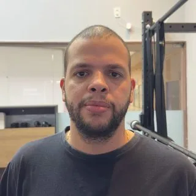
CREFITO-2 410684Fundador da Fullmotion e responsável por criar o método que une reabilitação, movimento e performance numa única experiência.
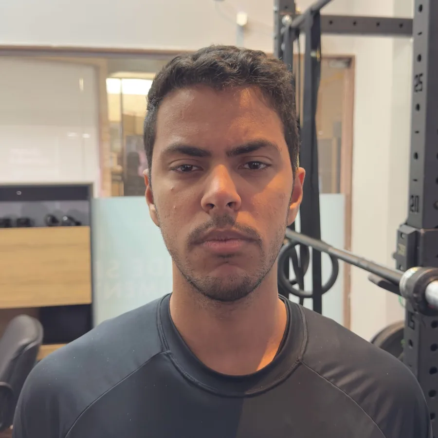
CREFITO-2 414840Especialista em fisioterapia ativa. Aqui o movimento é o tratamento. O Ryan identifica a causa da sua dor e conduz o seu plano com movimento.
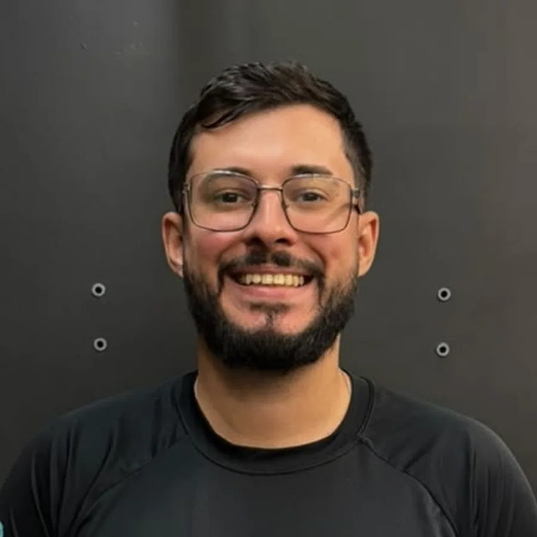
CREFITO-2 412929Focado em traumato-ortopedia e reabilitação com movimento. Conduz cada atendimento com avaliação criteriosa e atenção a cada detalhe.
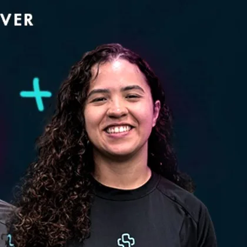
CREFITO-2 370293Especialista em fisioterapia ativa. A Larissa trabalha cada limitação com movimento, no ritmo que o seu corpo pede.
Conforto, segurança e foco total no seu tratamento. Hora marcada, atenção individual e orientação clara em cada etapa.
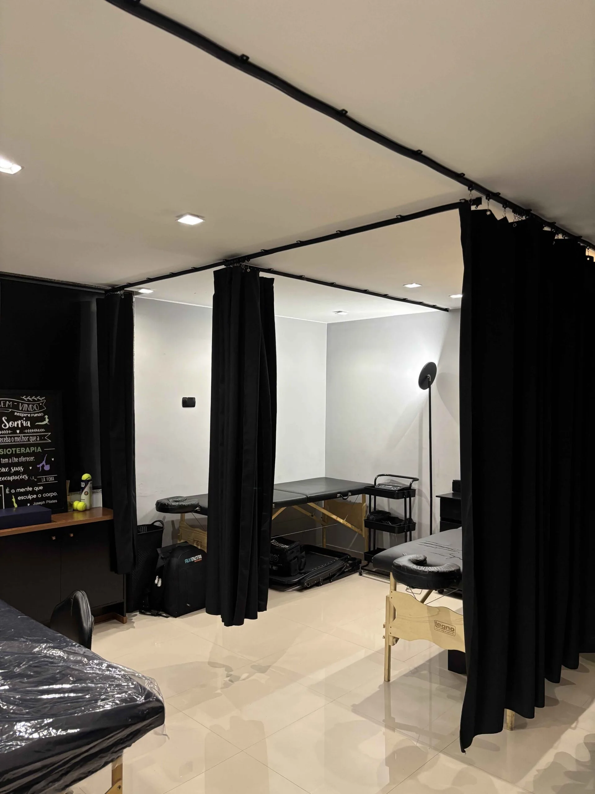
Vila Valqueire · 01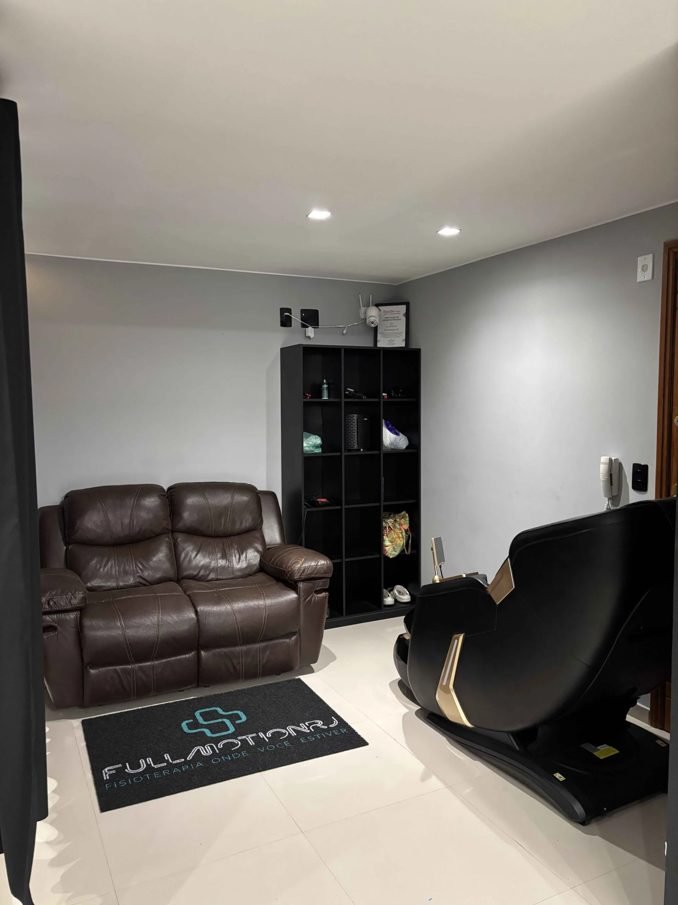
Vila Valqueire · 02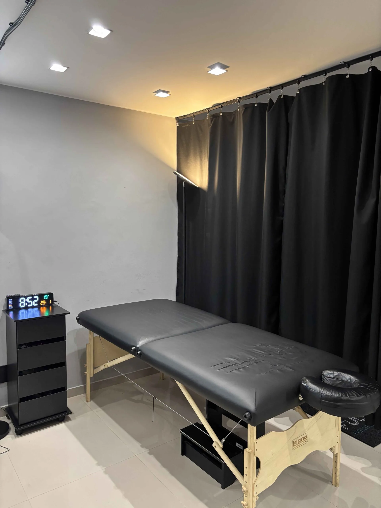
Vila Valqueire · 03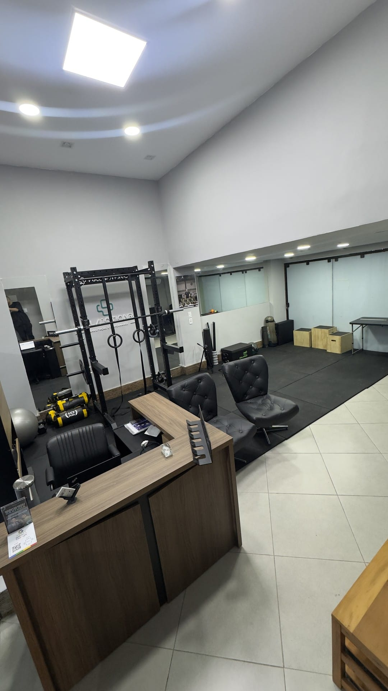
Recreio · 04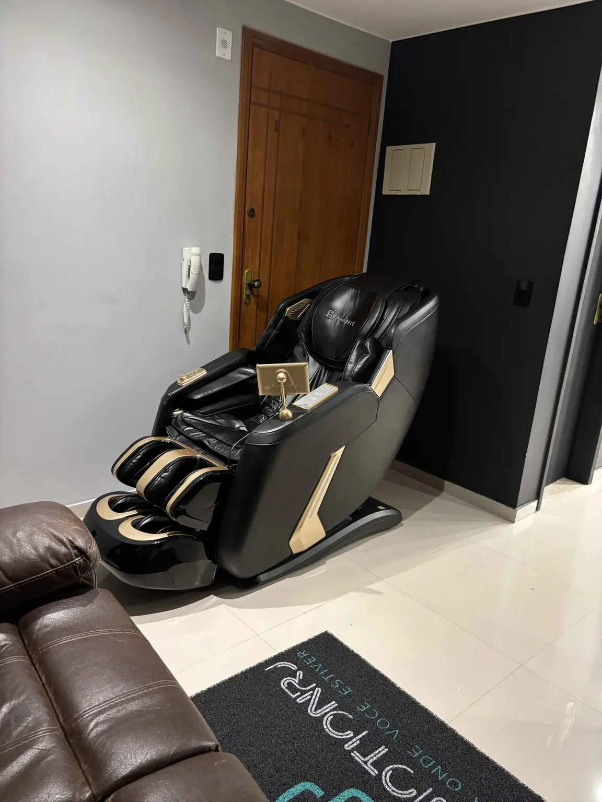
Estrutura · 05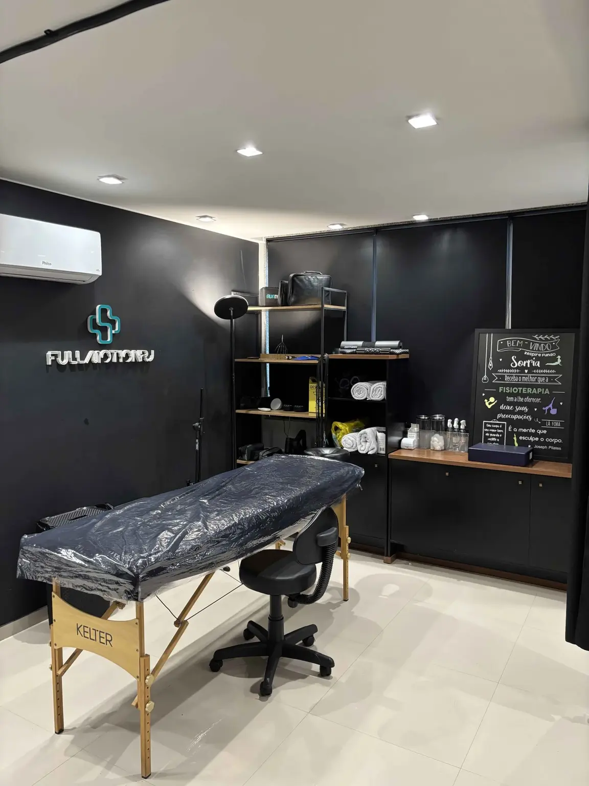
Estrutura · 06Não achou a sua dúvida?
Chama a gente no WhatsApp. Horário de marcação: segunda a sexta, das 7h às 19h. Sábado, das 8h às 12h.
Falar no WhatsAppNenhuma pergunta com essa palavra. Chama a gente no WhatsApp que a resposta vem na hora.
Não. Você agenda a avaliação direto com a gente, em Vila Valqueire ou no Recreio dos Bandeirantes, sem pedido médico.
Se a avaliação mostrar necessidade de exame ou de acompanhamento médico, a gente orienta o caminho certo.
A avaliação custa R$ 250 e já é a primeira consulta: 1h20 com um fisioterapeuta especialista, e você sai tratado no mesmo dia. Mesmo valor nas duas unidades, pago no dia, na unidade.
Se fizer sentido seguir, os planos de tratamento são mensais e renováveis, a partir de R$ 950 por mês com 4 atendimentos. Aceitamos PIX, débito e crédito pelo mesmo valor, e os planos podem ser parcelados em até 3x sem juros no cartão.
São 1h20 com o fisioterapeuta, sem pressa. A gente investiga histórico, postura, movimento e função para encontrar a causa da dor, e não só o lugar onde ela aparece. Você já sai tratado, com o recovery do fim (botas de compressão e poltrona de massagem) e um plano claro para o seu caso, mesmo que decida não tratar conosco.
Venha com roupa confortável, que deixe você se movimentar à vontade.
A frequência sai da avaliação: 1 ou 2 vezes por semana, conforme o seu caso e a fase do tratamento. A evolução é reavaliada ao longo do plano, e você sempre sabe em que fase está.
Depende do caso, por isso a gente não promete prazo. Cada corpo responde de um jeito, e a evolução é reavaliada ao longo do plano para você saber o que vem na próxima etapa.
Quem está com dor precisa primeiro entender a causa, e é isso que a avaliação de fisioterapia faz. Aqui o tratamento é fisioterapia com movimento ativo, conduzida do início ao fim por fisioterapeutas, e não aula de pilates ou de academia.
Depois da fase de tratamento, quem quiser seguir com exercício para manter o corpo em dia continua com a gente em frequência reduzida.
Atendemos hérnia de disco lombar e cervical, dor ciática e dor lombar. A avaliação procura o que está sobrecarregando a coluna, e o tratamento combina movimento, terapia manual e ajuste de carga, no ritmo que o seu corpo aceita.
Se doer, a gente ajusta. O plano sai da avaliação, sem promessa de prazo.
Em geral nos primeiros dias depois da cirurgia, conforme a liberação do seu cirurgião. A reabilitação segue fases: primeiro extensão do joelho, ativação do quadríceps e controle, depois força, salto e retorno ao esporte. O tempo de cada fase varia de pessoa para pessoa.
Dor lombar e cervical, hérnia de disco, ciático, joelho (LCA, menisco, dor patelar), ombro (manguito rotador, bursite, tendinite), entorse de tornozelo, fascite plantar, pós-operatório ortopédico e fisioterapia esportiva.
Também atendemos quem não está com dor e quer prevenir lesão com acompanhamento de fisioterapeuta.
Sim, para atleta amador e profissional: reabilitação de lesão, treino do gesto do esporte para o retorno e trabalho de prevenção com treino funcional e recovery depois da sessão.
Não atendemos por convênio: o atendimento é particular, o que garante hora marcada, o mesmo fisioterapeuta do início ao fim e um plano sem limite imposto por operadora.
Emitimos recibo para você pedir reembolso ao seu plano, conforme as regras dele.
Vila Valqueire: Rua das Rosas, 95, sala 413. Recreio dos Bandeirantes: Av. Salvador Allende, 6700, lojas 194 e 195, dentro do Shopping Bandeirantes Mall, com estacionamento coberto.
As duas funcionam de segunda a sexta, das 7h às 19h, e sábado, das 8h às 12h.
Sim. Atendemos em casa, e o tratamento é o mesmo: avaliação completa, plano individualizado e o mesmo fisioterapeuta do início ao fim. A avaliação em domicílio custa R$ 450 e já é a primeira consulta. Fale com a gente no WhatsApp para confirmar o seu endereço e o melhor horário.
Sim. Se você quer só um atendimento para aliviar agora, é só avisar no WhatsApp que a gente ajusta ao que você precisa.
O plano é mensal e renovável, sem compromisso de longo prazo. Se em algum momento fizer sentido pausar ou ajustar a frequência, a gente reavalia junto.
A alta não é despedida. Quando o seu movimento já sustenta a melhora sozinho, você pode continuar com a gente em frequência reduzida, só para manter o corpo em dia. As condições de continuidade são apresentadas na alta.
Clique em qualquer botão Agendar desta página para falar com a equipe no WhatsApp. Você escolhe a unidade, o dia e o horário, e recebe a confirmação com o endereço.
Horário de marcação: segunda a sexta, das 7h às 19h, e sábado, das 8h às 12h. O pagamento é no dia, na unidade.
A avaliação já é a primeira consulta, e você sai tratado no mesmo dia.
Agendar minha avaliaçãoSem encaminhamento médico. Hora marcada.